Дерево Меркла - це бінарне дерево, де кожен лист містить хеш даних, а кожен нелистовий вузол містить хеші пари своїх дочірніх вузлів. Це означає, що хеш верхнього вузла дерева, званий коренем Меркла, залежить від хешів усіх даних, представлених у листках.
Вступ до теорії графів
Для того щоб зрозуміти, що таке дерево Меркла, та й узагалі що таке дерево🌳 і які вони бувають, потрібно спочатку розібратися з теорією графів.
Теорія графів - це великий розділ дискретної математики, в якому системно вивчають властивості графів. Її широко застосовують у розв'язанні економічних і управлінських задач, у програмуванні, хімії, конструюванні та вивченні електричних кіл, комунікації, психології, соціології, лінгвістиці та в інших галузях.
Що таке граф
Граф - це математична абстракція, що являє собою набір вершин (вузлів), з'єднаних ребрами (лініями). Вершини можуть являти собою об'єкти, а ребра - відносини або зв'язки між цими об'єктами.
Простіше кажучи, граф - це геометрична фігура, яка складається з точок і ліній, що їх з'єднують. Точки називають вершинами графа, а лінії - ребрами.
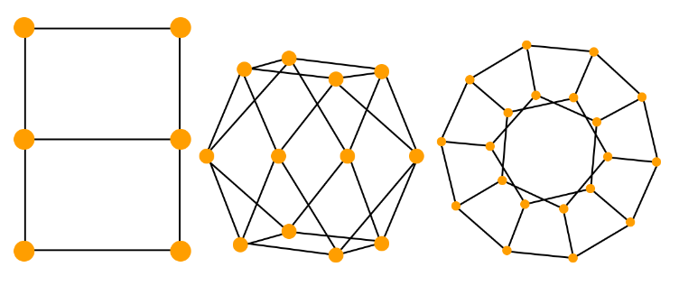Рис. 1 Декілька прикладів графів
Види графів
Видів графів може бути безліч, залежно від того, за якими критеріями їх класифікувати. Наприклад, за тим, як їх побудували, за властивостями вершин або ребер, за їхнім напрямком тощо. Ось кілька основних:
- Орієнтовані і неорієнтовані графи
- Зважені та незважені
- Повні і неповні
- Циклічні та ациклічні
- Зв'язні та незв'язні
Орієнтований і неорієнтований граф - це два види графів, які відрізняються тим, як вони представляють зв'язки між вершинами. В орієнтованому графі кожне ребро має напрямок, тобто вказує, від якої вершини воно виходить і до якої вершини воно веде. У неорієнтованому графі ребра не мають напрямку, тобто можна вважати, що вони пов'язують вершини в обидва боки. Наприклад, на малюнку нижче показано орієнтований і неорієнтований графи, що складаються з чотирьох вершин і п'яти ребер.
Рис. 2 Орієнтований граф
Рис. 3 Неорієнтований граф
На рис. 2 можна побачити, що вершини з'єднані спрямованими ребрами, тобто з вершини А можна напряму потрапити у вершину B, але з вершини B не можна напряму потрапити в A (тільки якщо пройти шлях B → D → C → A).
З іншого боку, на рис. 3 графом можна рухатися в будь-якому напрямку, оскільки він є неорієнтованим.
Орієнтовані та неорієнтовані графи мають різні властивості та застосування. Орієнтовані графи можуть використовуватися для моделювання процесів, у яких є спрямованість або порядок, наприклад, потоки даних, мережеві протоколи, маршрути руху тощо. Неорієнтовані графи можуть використовуватися для моделювання процесів, у яких немає спрямованості або порядку, наприклад, соціальні мережі, хімічні сполуки, електричні ланцюги тощо.
Зважені та незважені графи - це два види графів, які відрізняються тим, чи мають ребра числові значення, звані вагами або вартістю. У зваженому графі кожному ребру зіставлено деяке число, яке може означати, наприклад, довжину, пропускну здатність, вартість, ймовірність тощо. У незваженому графі ребра не мають ваг, тобто можна вважати, що всі ребра мають однакову вагу, що дорівнює одиниці.
 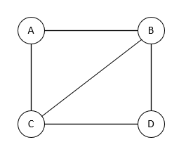
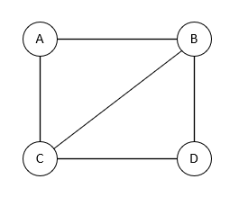
Рис. 4 Зважений орієнтований граф
Рис. 5 Незважений неорієнтований граф
Зважені та незважені графи мають різні застосування та алгоритми. Зважені графи можуть використовуватися для моделювання ситуацій, у яких важливо враховувати різні характеристики зв'язків між об'єктами, наприклад, для пошуку найкоротшого шляху, моделювання мереж, де числові значення представляють вартість пересування ребрами, час передавання даних або інші важливі параметри, що можуть варіюватися. Незважені графи можна використовувати для моделювання ситуацій, у яких важлива тільки наявність або відсутність зв'язків між об'єктами, наприклад граф дружби, у якому вершини представляють людей, а ребра представляють відносини дружби між ними. У цьому графі не важливо, як довго або як близько дружать люди, важливо тільки те, що вони дружать. Такий граф може використовуватися, наприклад, для аналізу соціальних мереж, пошуку спільних друзів, рекомендації контенту тощо.
Повні та неповні графи - це два види графів, які відрізняються тим, скільки ребер вони містять. Повний граф - це граф, у якому кожна пара різних вершин з'єднана ребром. Неповний граф - це граф, у якому не кожна пара різних вершин з'єднана ребром.
Рис. 6 Повний граф
Рис. 7 Неповний граф
Повний граф з n вершинами має n(n-1)/2 ребер, що є максимальною кількістю ребер для графа з n вершинами. Повний граф може використовуватися для моделювання ситуацій, у яких усі об'єкти взаємодіють один з одним, наприклад, для розв'язання задачі комівояжера, побудови мінімального кістякового дерева, аналізу соціальних мереж тощо.
Неповний граф з n вершинами має менше ніж n(n-1)/2 ребер, що є мінімальною кількістю ребер для графа з n вершинами. Неповний граф може використовуватися для моделювання ситуацій, у яких не всі об'єкти взаємодіють один з одним, наприклад, для пошуку найкоротшого шляху, визначення планарності і т.п.
Циклічні та ациклічні графи - це два види графів, які відрізняються тим, чи містять вони цикли, чи ні.
Цикл у графі - це замкнутий шлях, який починається і закінчується в одній і тій самій вершині. Циклічний граф - це граф, у якому існує хоча б один цикл. Ациклічний граф - це граф, у якому немає жодного циклу.
Рис. 8 Циклічний граф
Рис. 9 Ациклічний граф
Оскільки циклічним графом є будь-який граф, де є хоча б один цикл, припустимий і такий варіант:
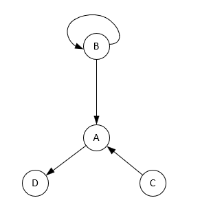Рис. 10 Циклічний граф
На відміну від рис. 8, у цьому графі цикл є тільки у вершини B (на рис. 8 весь граф є циклом). Важливо зауважити, що ребра в циклічних графах можуть бути як орієнтованими, так і ні, головне щоб був замкнутий шлях.
Зв'язний і незв'язний граф - це два види графів, які відрізняються тим, наскільки вони з'єднані між собою. Зв'язний граф - це граф, у якому існує шлях між будь-якими двома вершинами. Незв'язний граф - це граф, у якому є хоча б дві вершини, між якими немає шляху.
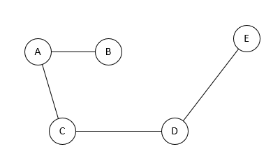Рис. 11 Зв'язний граф
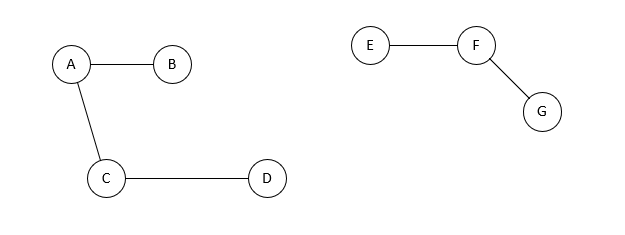Рис. 12 Незв'язний граф
На рис. 11 у цьому графі будь-які дві вершини можна з'єднати шляхом, наприклад, A → B → C → D → E або B → A → C → D → E.
На рис. 12 у графі є дві зв'язні компоненти: {A, B, C, D} і {E, F, G}, при цьому самі ці компоненти між собою не пов'язані.
Зв'язні та незв'язні графи мають різні властивості та застосування. Зв'язний граф може використовуватися для моделювання ситуацій, у яких усі об'єкти взаємопов'язані, наприклад, для представлення мереж комунікації, транспорту, електрики тощо.
Незв'язний граф може мати кілька компонент зв'язності, які не мають спільних вершин або ребер. Незв'язний граф може використовуватися для моделювання ситуацій, у яких є розриви або ізоляція між об'єктами, наприклад, для представлення розділених територій, незалежних груп, вимкнених пристроїв тощо.
Тут було розглянуто основні типи графів, але також безліч було спеціально упущено, щоб не розтягувати цю частину. Проте вони також важливі і мають широкий спектр застосувань у різних галузях, надаючи нам інструмент для аналізу та моделювання різних структур і взаємозв'язків. Наприклад, ви можете додатково прочитати про порожні графи, мультиграфи, Ейлерові, Гамільтонові графи і, звісно ж, про дерева, про які розповідатиметься далі.
Дерева🌳
Дерева - це зв'язний ациклічний граф. Тобто дерево це підтип (окремий випадок) графа.
Простими словами, дерево можна уявити як набір вершин, які з'єднані ребрами, і де водночас немає циклів і немає ізольованих частин (тобто дотримується зв'язність). Вершина, що не має вхідних ребер, називається кореневою, а вершина без вихідних ребер - листовою. Також ще однією властивістю дерев є те, що кількість ребер завжди на 1 менша за кількість вершин. Якщо б було інакше, то в графі були б цикли або не дотримувалася б умова зв'язності, що, звісно, вже не відповідає визначенню дерева.
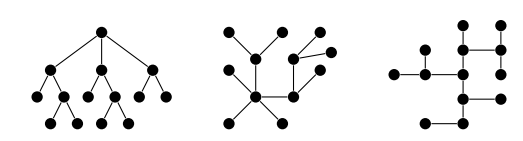Рис. 13 Різновиди дерев
Ієрархічні дерева мають своїх нащадків і батьків. Нащадок у дереві - це будь-яка вершина, що перебуває на нижчому рівні щодо певної вершини, яку називають батьком. Можна уявити, що вершина дає піддерева, які "походять від неї", і всі вершини в цих піддеревах є її нащадками.
Простими словами, якщо у вершини A є нащадок B, то B перебуває на нижчому рівні і є частиною піддерева, що походить від вершини A.
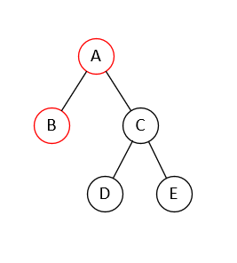Рис. 14 Ієрархічна структура дерева
На рис. 14 вершина A(корінь) має двох нащадків: B і C. Вершина C також має двох нащадків: D і E. B, D і E є нащадками A і C відповідно. Також B, D, E є листям, оскільки з них не виходять інші ребра в інші вершини.
Якщо прибрати одне ребро з дерева, воно розділиться на дві компоненти. Граф, що складається з компонент дерева, називається лісом.
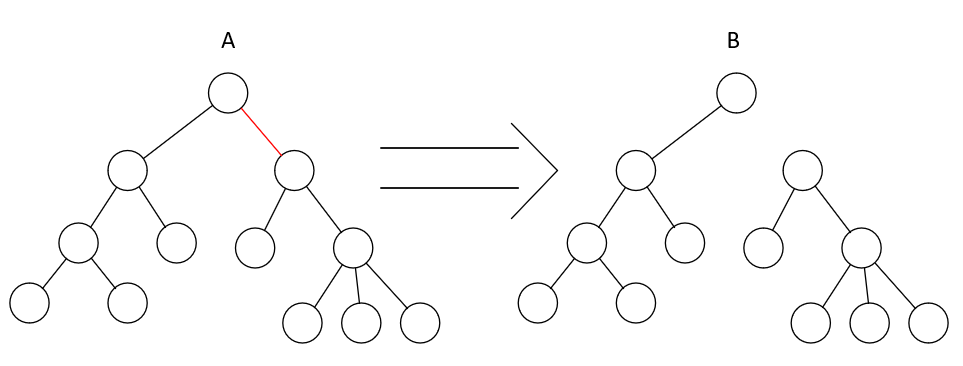Рис. 15 Перетворення дерева в ліс
З дерева А прибрали ребро виділене червоним кольором. Тепер граф B який складається з двох незв'язаних дерев є лісом.
Види дерев
Познайомившись із деревами, тепер можна перейти до їхніх різновидів. Найпоширенішими є:
- Двійкове(бінарне) дерево
- N-арне дерево
- Збалансоване
- Неповне
- Орієнтоване
Бінарне дерево - це дерево, у якому кожна вершина має щонайбільше двох нащадків, які називаються лівим і правим.
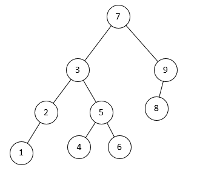Рис. 16 Бінарне дерево
Бінарні дерева широко застосовуються в інформатиці для розв'язання різних завдань, таких як пошук, сортування і структури даних. Дерево Меркла, про яке йтиметься далі, також є бінарним (двійковим).
N-арне дерево - це дерево, в якому кожна вершина має не більше n піддерев, де n - це деяке фіксоване число. N-арні дерева узагальнюють бінарні дерева на випадок, коли потрібно зберігати більше інформації в кожній вершині. Наприклад, n-арне дерево може використовуватися для представлення синтаксичного аналізу, стиснення даних, ігрових дерев тощо.
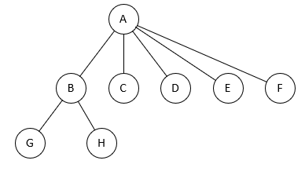Рис. 17 N-арне дерево
На рис. 17 A — корінь, B, C, D, E, F — вузли першого рівня, G, H — вузли другого рівня, і так далі. Вузли G, H, D, E, F являються листками.
Такий тип дерев може застосовуватися в базах даних, комп'ютерних мережах, аналізі даних і багато іншого. Вони надають гнучкішу структуру, ніж двійкові дерева, і можуть бути ефективними для представлення й організації даних у вигляді дерев із довільним числом нащадків.
У збалансованих деревах різниця між висотами лівого і правого піддерев'їв кожної вершини не перевищує одиниці. Збалансовані дерева дають змогу оптимізувати час і пам'ять, необхідні для виконання різних операцій, таких як вставка, видалення, пошук тощо.
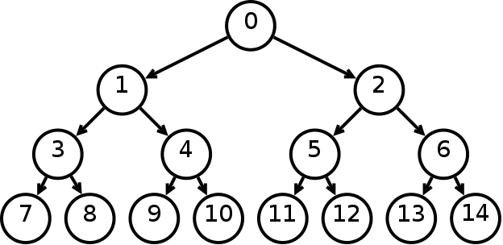Рис. 18 Збалансоване
Неповне дерево - це дерево, у якому не всі рівні заповнені повністю. Неповні дерева можуть бути корисними, коли потрібно додавати або видаляти елементи динамічно, не порушуючи структури дерева.
На рис. 16 можна побачити неповне бінарне дерево, оскільки у вершин 2 і 9 тільки по одному нащадку.
Орієнтоване дерево - це дерево, в якому ребра мають напрямок, тобто вказують, від якої вершини вони виходять і до якої вершини вони ведуть.
Рис. 18 демонструє приклад орієнтованого дерева, воно може бути як збалансованим, так і незбалансованим, як бінарним, так і ні, або може відрізнятися ще за низкою інших характеристик.
Є ще багато інших дерев, які також дуже корисні і багато де застосовуються, але про які тут не було сказано. Наприклад: бінарне дерево пошуку, дерево купи, avl-дерево, чорно-червоне дерево, дерево відрізків і Фенвікове дерево.
Отже, у цьому розділі ми коротко розглянули теорію графів, охоплюючи широкий спектр структур даних і математичних моделей. Починаючи від простих неорієнтованих графів і закінчуючи складними збалансованими деревами, кожна з цих структур має свої особливості та застосування в різних галузях інформатики та інженерії.
Орієнтовані графи дають змогу моделювати спрямовані зв'язки, а зважені графи додають додаткові параметри, такі як ваги ребер, розширюючи сферу їхнього застосування. Двійкові дерева знайшли своє застосування в пошуку та сортуванні даних, а збалансовані дерева забезпечують ефективний доступ до елементів при дотриманні балансу.
Розуміння цих структур даних є фундаментальним для розробників та інженерів, тому що вони слугують основою для розв'язання різних завдань, починаючи від зберігання даних і закінчуючи оптимізацією алгоритмів.
У наступному розділі ми перейдемо до детальнішого розгляду однієї з важливих структур даних - дерева Меркла, і дослідимо його роль і застосування в контексті блокчейн-технологій і криптографії.
Про дерево Меркла
Нарешті після чималого вступу в теорію графів, тепер можна розібрати окремий випадок дерева (яке є підвидом графа) - дерево Меркла. Давайте ще раз повернемося до його визначення:
Дерево Меркла - це бінарне дерево, де кожен листок містить хеш даних, а кожен нелистовий вузол містить хеші пари своїх дочірніх вузлів. Це означає, що хеш верхнього вузла дерева, званий коренем Меркла, залежить від хешів усіх даних, представлених у листках. Розроблено воно було відомим криптографом Ральфом Мерклом 1987 року в статті "Цифровий підпис, заснований на звичайній функції шифрування".
Усе, що стосується теорії графів у цьому визначенні, тепер має бути зрозумілим, єдині неоднозначні моменти можуть залишитися тільки з поняттям хеша. Для цього можна прочитати ось цю статтю - що таке хеш.
Перед тим як детальніше розбирати пристрій дерева Меркла (хеш-дерева), потрібно подивитися, який воно має вигляд.
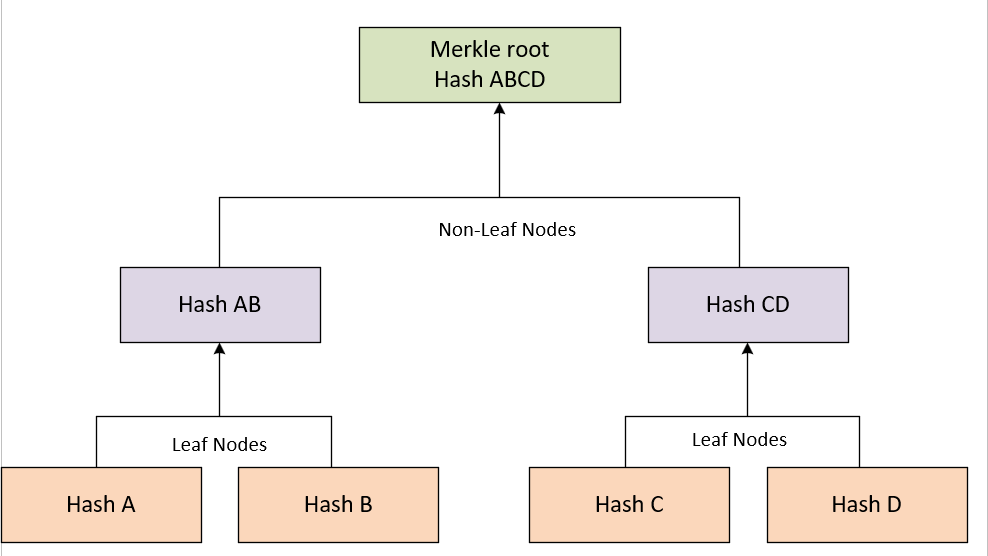Рис. 19 Дерево Меркла
Побудова дерева Меркла
Давайте почнемо з самого низу - з листків. Як можна бачити на зображенні, у нас є 4 листки у дерева, кожне з них зберігає хеш якихось даних. Ці хеші групуються по двоє, далі конкатонуються (тобто ці повідомлення просто складаються. Приклад конкатенації двох рядків: "Merkle" конкатенація "tree", буде "merkletree") і з нового повідомлення ще раз рахується хеш. Так робиться доти, доки не залишиться один хеш - він буде кореневим.
Може бути така ситуація, що кількість вузлів непарна. У такому разі, останній блок дублюється і конкатенує сам із собою. Давайте розглянемо цю ситуацію детальніше:
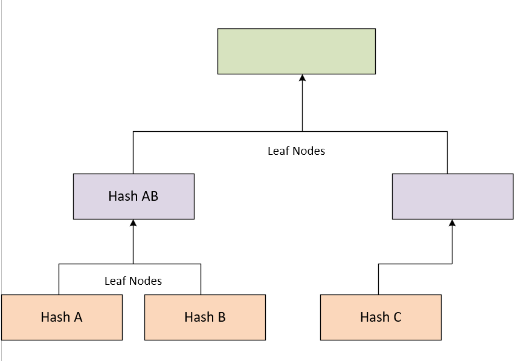Рис. 20 Неповне хеш-дерево
Як можна бачити на малюнку, хеша D немає, тобто кількість вузлів непарна, а отже ми не можемо порахувати хеш вузла вище.
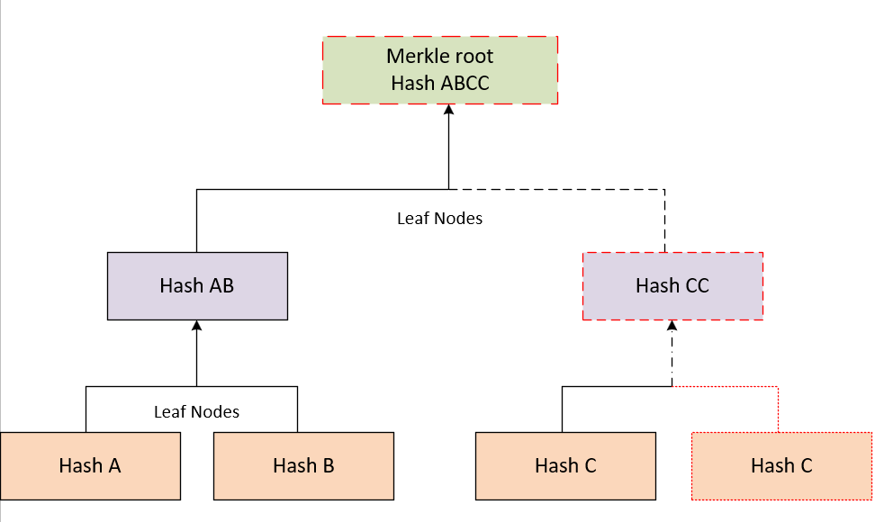Рис. 21 Останній вузол дубльований
Оскільки кількість вузлів (у цьому випадку листків) була непарною, тобто в правій частині дерева вузлу C не вистачало сусіда, ми його просто продублювали. Далі стався стандартний процес під час побудови дерева Меркла, а саме - рекурсивно порахували хеші у вузлах батьків.
Для наочності, дубльована гілка хешу C була виділена пунктирною лінією та іншим кольором.
Для ще кращого розуміння самостійно побудуємо дерево Меркла. Як вхідні дані, з яких потім порахуємо хеш, візьмемо речення "Merkle trees are used in blockchain and cryptography" і розіб'ємо його на 4 блоки по 2 слова. Вийде ось так: 1 блок - "Merkle trees"; 2 блок - "are used"; 3 блок - "in blockchain"; 4 блок - "and cryptography". Потім порахуємо хеш (SHA 256) для кожного блоку.
Ось що вийде:
1 блок - 24ad5b12ce57c6a3acd080dff12c8d7144ee2c294186cc18aa15fa6a0d5bfcfc
2 блок - 328438dc37dd99c6e0476050f453313d58d2d55c21ceb8bc7a71257ae310cf36
3 блок - 3701e2f63d6fc8e4b3ace0187385e8675fd4e7a93814bf743b35e75487167d9a
4 блок - 7157cd8e454dc7c0b650bb41c569d5f22669a5cc9e5a8ebbc7bc9be964e7dd6b
Далі ми конкатенуємо 1 + 2 і 3 + 4 блоки, точніше їхні хеші. Ось що вийде:
1 + 2 блоки - 24ad5b12ce57c6a3acd080dff12c8d7144ee2c294186cc18aa15fa6a0d5bfcfc328438dc37dd99c6e0476050f453313d58d2d55c21ceb8bc7a71257ae310cf36
3 + 4 блоки - 3701e2f63d6fc8e4b3ace0187385e8675fd4e7a93814bf743b35e75487167d9a7157cd8e454dc7c0b650bb41c569d5f22669a5cc9e5a8ebbc7bc9be964e7dd6b
Знайдемо хеші цих двох рядків:
12 - fe7329cb24f93b920db2a5e1b626122c744c7966f47a7033e97ea5cd0d5f5b62
34 - e00afef420f18a0e50addad89eb6a776764ddeb8cec69b3245dfe0a5d812ee48
Нарешті залишилося порахувати корінь, для цього конкатенуємо хеші 12 і 34.
12 + 34 - fe7329cb24f93b920db2a5e1b626122c744c7966f47a7033e97ea5cd0d5f5b62e00afef420f18a0e50addad89eb6a776764ddeb8cec69b3245dfe0a5d812ee48
Рахуємо хеш від цього рядка:
1234 - 112562269c654994bc99b898108c5da052469ad075d9e9ae9f58faae2c7bb4de
Те саме, тільки візуалізовано у вигляді дерева:
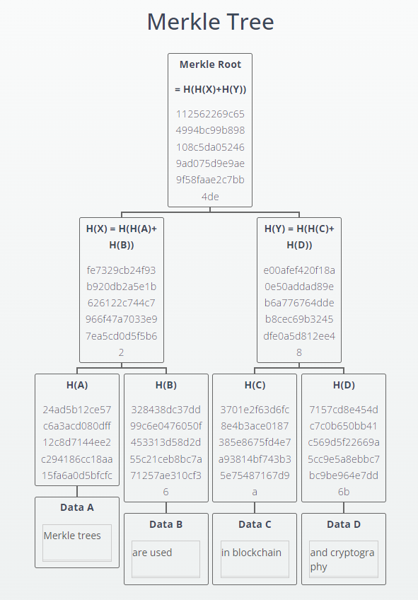Рис. 22 Дерево Меркла
Ви можете самі це протестувати скориставшись цим сайтом. Якщо хочете переконається що все правильно працює, скористайтеся сайтом для підрахунку хеша.
Типи дерев Меркла
Оскільки дерево Меркла це окремий випадок дерева, то воно має такі самі різновиди як і всі інші дерева. Тому довго зупинятися на цьому не будемо, лише коротко опишемо їх і подивимося, який вони мають вигляд.
- Бінарне дерево
- N-арне
- Збалансовані
- Неповне
Бінарне дерево Меркла ми щойно розглядали вище, тому немає потреби ще раз усе це повторювати.
Як і просте n-арне дерево, n-арне дерево Меркла на відміну від бінарного може мати кількість нащадків більшу за два.
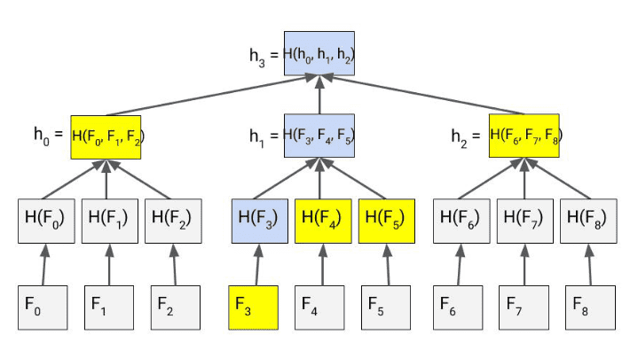Рис. 23 N-арне дерево Меркла
Такий тип дерев дає змогу ефективніше зберігати й обробляти великі обсяги даних. Це пов'язано з тим, що N-арні дерева Меркла мають нижчу висоту, ніж бінарні. Нижча висота означає, що для обчислення хеша кореневого вузла потрібно менше операцій.
У збалансованих деревах усі гілки мають однакову глибину, що гарантує балансування. Вузли в такому дереві додаються зверху вниз, починаючи з листя, щоб забезпечити рівномірний розподіл даних. Перевагою такого типу дерев, є забезпечення більш високої продуктивності, порівняно з незбалансованими типами.
Як перевагою так і недоліком неповного дерева Меркла є те, що не всі листки містять дані. Це дає змогу заощадити пам'ять, однак таке дерево може бути менш ефективним для пошуку даних. Це пов'язано з тим, що для пошуку даних у неповному дереві Меркла може знадобитися пройти довшими шляхами.
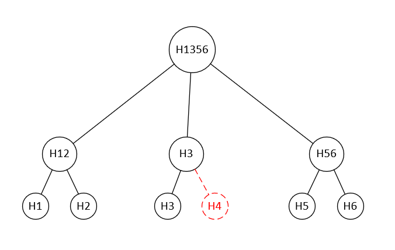Рис. 24 Неповне дерево Меркла
Як можна бачити на рис. 24, у цього неповного дерева відсутній листок H4 (який спеціально виділено червоним кольором). Коли в якогось вузла недостатня кількість дочірніх вузлів, то він формується на основі хешів тих вузлів, що існують. Виходячи з принципу формування звичайного дерева Меркла, можна поставити логічне запитання, чому б у цьому дереві не взяти вузол H3 і не продублювати його ще раз, щоб вищий вузол формувався як конкатенація двох вузлів H3? Відповідь у тому, що бувають різні ситуації, і іноді потрібно зберегти цілісність даних. Цілісність даних забезпечується тим, що хеш кореневого вузла є унікальним відбитком усього набору даних. Якщо ми дублюємо якийсь вузол, то це призведе до того, що хеш кореня зміниться, навіть якщо дані в інших вузлах не змінювалися.
Це були основні типи дерев Меркла, є ще й інші різновиди - наприклад, дерево Меркла Патриції Патриції, яке використовується в блокчейні Ethereum, але воно варте окремої статті.
Інтегритет в деревах Меркла
Інтегритет або цілісність і надійність дерев Меркла забезпечується тим, що хеш кореневого вузла є унікальним відбитком усього набору даних. Якщо дані в одному з аркушів дерева Меркла були змінені, то це призведе до зміни хеша кореневого вузла. Це дасть змогу виявити будь-які зміни в даних.
Ось кілька способів порушити цілісність дерева Меркла:
- Змінити дані в одному з аркушів дерева Меркла. Це призведе до зміни хеша кореневого вузла, що дасть змогу виявити зміни.
- Додати або видалити дані з дерева Меркла. Це також призведе до зміни хеша кореневого вузла, що дасть змогу виявити зміни.
- Змінити порядок листя дерева Меркла. Це не призведе до зміни хеша кореневого вузла, але може ускладнити пошук даних у дереві Меркла.
Оскільки дерево Меркла будується на хешах, і кожен вузол - це хеш попередніх вузлів (якщо це, звісно, не листя), то в разі зміни значення одного з вузлів, усі вузли, що стоять вище, змінять також свої значення. Ця властивість легко дає можливість визначити, чи були внесені зміни в дереві (інтегритет).
Подивіться на ці два дерева:
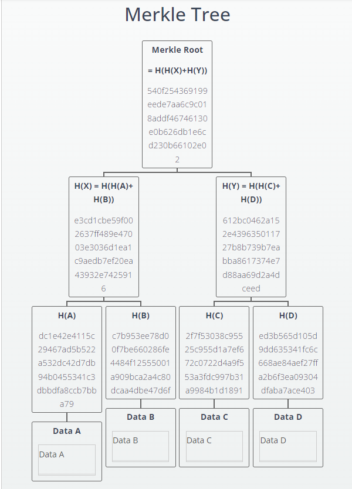Рис. 25 Дерево Меркла
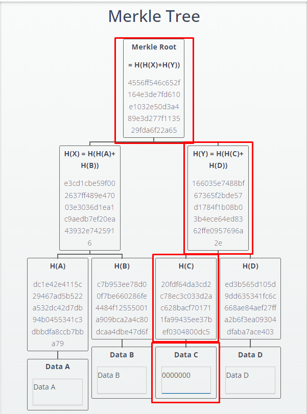Рис. 26 Дерево Меркла зі зміненим блоком даних C
Як ми можемо бачити на рис. 26, дані в блоці C були змінені, тим самим змінивши вузли: H(C), H(H(C) + H(D)) і кореневий вузол. Так можна перевіряти цілісність блоків даних, для цього можна використовувати шлях від цього блоку до кореня. Отримавши всі необхідні хеші на шляху, можна рекурсивно обчислити кореневий хеш і порівняти його з фактичним кореневим хешем дерева. Якщо вони збігаються, дані вважаються цілісними.
Перевагою інтегритету в деревах Меркла є: забезпечення ефективної та швидкої перевірки цілісності даних. Це особливо важливо в контексті блокчейнів та інших систем, де потрібна надійна перевірка цілісності транзакцій і даних. Про це ми поговоримо трохи пізніше.
Переваги і недоліки дерева Меркла
Розібравшись з основними поняттями дерев Меркла, їхньою структурою та властивостями, можна поговорити про переваги та недоліки.
Можна виділити такі переваги:
- Ефективність перевірки цілісності - дерева Меркла надають ефективний механізм для перевірки цілісності даних. Дають змогу швидко і легко переконатися, що конкретні блоки даних не були змінені.
- Економія ресурсів - під час перевірки цілісності даних не потрібно порівнювати кожен байт даних. Досить порівняти хеші, що зменшує кількість переданої інформації та економить ресурси.
- Безпека - використання криптографічних хеш-функцій під час створення дерев Меркла забезпечує високий рівень безпеки. Будь-які зміни даних будуть відразу помічені.
- Масштабованість - дерева Меркла масштабуються добре зі збільшенням кількості блоків даних. Їхня структура дає змогу ефективно обробляти великі обсяги інформації.
- Можуть використовуватися в різних галузях - дерева Меркла можуть використовуватися в різних галузях, включно з блокчейном, зберіганням файлів і управлінням цифровими правами.
З недоліків:
- Складність реалізації - реалізація дерев Меркла може потребувати додаткових зусиль порівняно з іншими методами перевірки цілісності даних.
- Необхідність зберігання всього дерева - для перевірки цілісності необхідно зберігати весь шлях від блоку даних до кореня, що може потребувати додаткового місця.
- Вразливість до деяких атак - у деяких випадках дерева Меркла можуть бути вразливими до атак, таких як колізії хеш-функцій. Однак використання криптографічно стійких хеш-функцій знижує цей ризик.
- Необхідність перебудови при зміні даних - при внесенні змін у блок даних дерево Меркла вимагає перебудови, що може бути витратним за ресурсами.
У цьому розділі ми розглянули що з себе представляють дерева Меркла, виявивши їх важливе значення в контексті перевірки цілісності даних. Ці структури даних є невід'ємним інструментом у забезпеченні безпеки та автентичності в різних сферах, включно з криптографією та блокчейном.
Дерево Меркла, з основою в бінарній структурі, надає ефективний механізм для виявлення будь-яких змін у даних. Криптографічні хеш-функції, інтегровані в кожному вузлі, гарантують високий рівень безпеки та стійкість до атак.
Розглянуті різноманітні типи дерев Меркла - бінарні, n-арні, збалансовані та неповні - надають вибір залежно від вимог конкретних систем. Ці структури не тільки забезпечують ефективну перевірку цілісності даних, а й успішно інтегруються в блокчейн-технології, покращуючи їхню безпеку та ефективність.
Завершуючи цей огляд, підкреслимо, що дерева Меркла відіграють ключову роль у забезпеченні надійності систем інформаційної безпеки. У наступному розділі ми розглянемо конкретні застосування дерев Меркла в блокчейн-проектах, де ці структури продовжують демонструвати свою ефективність у захисті даних і підтвердженні їхньої автентичності.
Застосування дерева Меркла в блокчейні
У сфері блокчейна, де безпека і надійність даних перебувають у центрі уваги, дерево Меркла стає невід'ємною частиною архітектури. Ця структура даних відіграє важливу роль у забезпеченні цілісності та автентичності транзакцій, роблячи його важливим елементом для більшості блокчейн-проектів.
Для того щоб краще зрозуміти, як конкретно дерево Меркла застосовується в блокчейні, для початку давайте розглянемо структуру блокчейна Біткоїна. Як уже зрозуміло з назви, блокчейн це ланцюжок блоків. Пов'язані вони за допомогою все тих же хешів. Тобто блок під номером N у своїй структурі містить хеш блоку N-1, а блок N-1 містить хеш блоку N-2 і так до самого першого блока. Такий механізм потрібен з багатьох причин, але одна з основних - це забезпечення цілісності блокчейна. Наприклад, якщо хтось захоче змінити якісь дані в будь-якому блоці (крім найостаннішого), то йому наново доведеться перераховувати хеш і виконувати PoW всього цього блоку і всіх наступних за ним, що може виявитися дуже непростим завданням.
Власне сам блокчейн має приблизно такий вигляд:
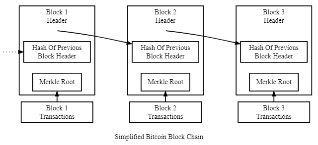Рис. 27 Схема блокчейна
Загалом блок Біткоїна ділиться на дві важливі частини: заголовок блоку (block header) і список транзакцій (transaction list).
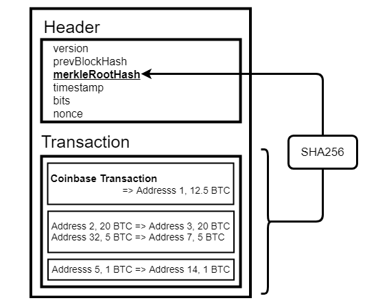Рис. 28 Структура блока
Ми зараз не будемо детально розглядати, як влаштований блок Біткоїна, закцентуємо увагу тільки на списку транзакцій і заголовку блоку. У блоці може перебувати як одна транзакція (наприклад, тільки coinbase transaction), так і кілька тисяч транзакцій. Коли майнер формує блок, він бере ці транзакції, рахує їхній хеш і вибудовує дерево Меркла. Корінь цього дерева зберігається в заголовку блоку, а сам хеш блоку рахується як хеш усіх полів, що знаходяться в цьому заголовку. Це дуже важливо і потім ми побачимо чому.
Які основні застосування дерева Меркла в блокчейні:
- Перевірка включення транзакції до блоку: доказ Меркла дає змогу учасникам мережі ефективно перевіряти, чи включено певну транзакцію до блоку, не завантажуючи при цьому весь ланцюжок блоків.
- SPV (Simplified Payment Verification) вузли: ці вузли, також відомі як легкі вузли, можуть перевіряти достовірність транзакцій і блоків, використовуючи тільки заголовки блоків і докази Меркла, без необхідності завантаження всього ланцюжка блоків.
- Скорочення розміру старих блоків: Зберігання тільки дерева Меркла замість повного списку транзакцій у старих блоках дає змогу зменшити об'єм даних, зберігаючи при цьому цілісність блоку. Це може бути корисним для оптимізації зберігання даних у блокчейні.
Давайте пройдемося докладніше по кожному з пунктів.
Перевірка включення транзакції в блок
Уявімо, що у нас є блок, у якому 8 транзакцій. У такому разі дерево Меркла матиме такий вигляд:
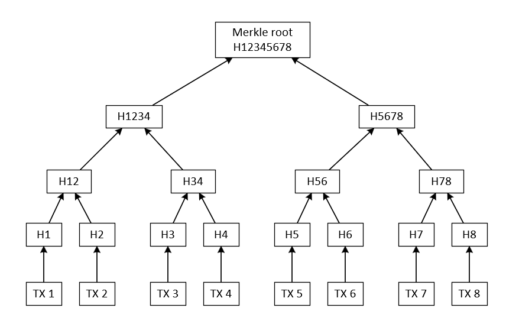Рис. 29 Дерево Меркла для 8 транзакцій
Візьмемо, наприклад, транзакцію під номером 5 і за допомогою доказу Меркла перевіримо, чи знаходиться вона в блоці. Для цього нам потрібно порахувати її хеш, після чого з блокчейна запросимо хеші вузлів 6, 78 і 1234. За допомогою цих даних порахуємо корінь дерева і порівняємо його з тим, що міститься в блокчейні, якщо вони збігаються, значить, наша транзакція перебуває в блоці. Візуально, на прикладі дерева це буде виглядати так:
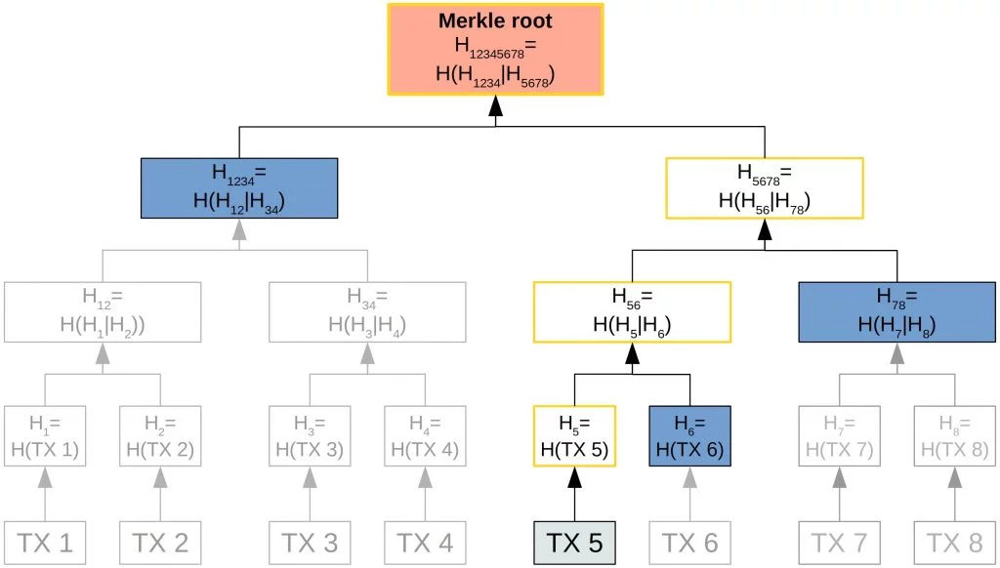Рис. 30 Доказ Меркла для транзакції 5
На цьому прикладі ми можемо наочно побачити перевагу зберігання транзакцій у дереві Меркла. Такий підхід дає змогу ефективніше визначати, чи перебуває транзакція в блоці, ніж завантаження всього списку транзакцій і порівняння кожної транзакції зі списку зі своєю. Також метод доказу Меркла кращий, ніж просто завантаження всього дерева, оскільки нам потрібно отримати тільки ті елементи з гілок дерева, що допоможуть порахувати корінь.
Скорочення розміру старих блоків
Якщо блок досить старий (тобто здійснення атаки 51% стає дуже складним), його розмір можна скоротити, видаливши з нього список усіх транзакцій і зберігши тільки дерево Меркла або взагалі тільки його корінь. Оскільки під час побудови блокчейна в розрахунку хеша блоку беруть участь тільки ті дані, які зберігаються в його заголовку, немає сенсу зберігати список усіх транзакцій, їх можна видалити, залишивши тільки дерево, це не вплине на його хеш, відповідно, не змінить хеш заголовка блоку, а отже, не змінить і весь ланцюжок блоків. При цьому ми заощадимо пам'ять. Це може бути актуально, коли блокчейн досить старий (як Біткоїн) і у нього вже багато блоків, які всі разом мають вже пристойну вагу. Або коли генерація блоків відбувається часто і блокчейн розростається швидко.
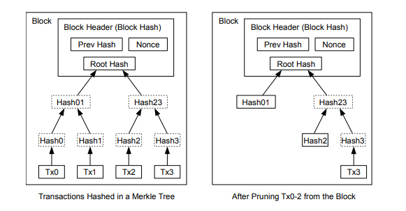Рис. 31 Урізання дерева Меркла для економії дискового простору
SPV-вузли
У міру зростання блокчейна з'явилася необхідність у легких вузлах. Легкий вузол - це вузол, який не завантажує і не зберігає весь ланцюжок блоків, а тільки необхідну йому інформацію для проведення операцій, таких як перевірка транзакцій. Наразі розмір блокчейна Біткоїна близько 550 ГБ, що накладає деякі обмеження на апаратне забезпечення користувачів мережі. Тому легкі вузли використовуються, наприклад, у мобільних гаманцях або інших обмежених за ресурсами оточеннях.
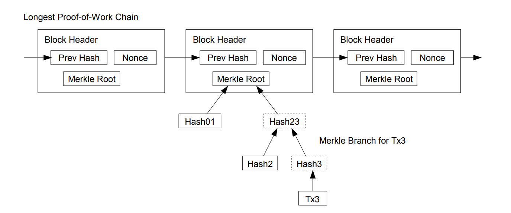Рис. 32 Верифікація транзакції в одному з блоків SPV-вузлом
Як можна бачити на малюнку, SPV-вузол завантажує тільки заголовки всього ланцюжка блоків. У разі якщо йому потрібно перевірити якусь транзакцію, він може запросити доказ Меркла для цієї транзакції в конкретному блоці.
Основні характеристики легкого вузла:
- Не завантажує весь ланцюжок блоків: легкий вузол зберігає тільки заголовки блоків і частину транзакцій, пов'язаних із його власними операціями.
- Доказ Меркла: для перевірки включення транзакції в блок легкий вузол може використовувати доказ Меркла, що дає йому змогу підтверджувати включення своїх транзакцій у блоки, навіть не завантажуючи весь ланцюжок блоків.
- Економія ресурсів: легкий вузол вимагає менше обчислювальних і мережевих ресурсів, ніж повний вузол, що робить його більш придатним для обмежених пристроїв, таких як мобільні пристрої.
- Децентралізація: використання легких вузлів сприяє децентралізації, оскільки вони не вимагають значних обчислювальних ресурсів і можуть бути легко запущені на широкому спектрі пристроїв.
Легкі вузли можуть забезпечувати користувачів базовою функціональністю блокчейна, такою як перевірка транзакцій, без необхідності завантажувати і зберігати весь ланцюжок блоків.
Підсумовуючи, дерево Меркла стає невід'ємною частиною інфраструктури блокчейна, надаючи ефективні механізми перевірки цілісності даних. Його унікальні властивості, такі як компактність, швидкодія і можливість доказу включення даних, зробили його ключовим елементом різних блокчейн-платформ.
Застосування дерева Меркла в блокчейні не тільки покращує безпеку та ефективність транзакцій, але також підтримує різні сценарії використання, такі як легкі вузли та підтвердження включення транзакцій. Від масштабних проєктів, таких як Bitcoin і Ethereum, до нових ініціатив у сфері децентралізованих застосунків, дерево Меркла залишається важливим елементом забезпечення цілісності та довіри в блокчейні.
У майбутньому можна очікувати ще ширшого застосування та інновацій у сфері дерев Меркла, оскільки блокчейн-технології продовжують свій розвиток і проникнення в різні сектори економіки та суспільства.
Застосування дерева Меркла в інших сферах
Нехай блокчейн і найбільш відома сфера де використовуються дерева Меркла, але не єдина. У цьому розділі ми коротко розглянемо, де ще знадобилася така структура даних.
Через властивості хешів, дерево Меркла чудово підходить для файлових систем і систем контролю версій, наприклад: Git або IPFS, також воно чудово підходить для генерації та перевірки підписів (власне, спочатку для цього воно і було створено). Давайте для початку розберемо саме цей аспект застосування дерев Меркла.
Схема підписів Меркла
Схема підписів Меркла (Merkle Signature Scheme, MSS) - це криптографічний протокол підпису, що використовує структуру даних дерева Меркла для ефективного створення та перевірки підписів. Ця схема являє собою комбінацію ідей з області хеш-дерев і криптографії з відкритим ключем.
Основні кроки роботи схеми підписів Меркла:
- Генерація ключів: Як і в інших схемах із відкритим ключем, спершу генерують пару ключів: закритий ключ для підпису і відкритий ключ для верифікації.
- Створення хеш-дерева: З відкритого ключа створюється хеш-дерево Меркла. Кожен вузол дерева містить хеш конкатенації хешів своїх дочірніх вузлів. У листках дерева містяться хеші від відкритих ключів, а корінь дерева стає відкритим ключем схеми.
- Підпис: Для створення підпису використовується закритий ключ. Підписуються не повідомлення безпосередньо, а хеші повідомлень, отримані з дерева Меркла. Зазвичай це хеші листків, що являють собою повідомлення.
- Верифікація: Під час верифікації підпису відкритий ключ спочатку перетворюється на хеш-дерево Меркла, а потім використовується для перевірки підпису, аналогічно тому, як відбувається верифікація в інших схемах підписів.
Переваги
- Ефективність верифікації: Під час верифікації підпису необхідно обчислити тільки частину дерева Меркла, пов'язану з конкретним повідомленням, що робить процес ефективнішим.
- Постквантовість: У часто використовуваних алгоритмах цифрового підпису, таких як RSA і DSA, використовується складність факторизації чисел і складність обчислення дискретного логарифма. Однак, використовуючи алгоритм Шора і квантовий комп'ютер, ці підписи можуть бути зламані за поліноміальний час. На відміну від них підпис Меркла є постквантовим, оскільки його криптографічна стійкість ґрунтується на стійкості криптографічної хеш-функції та стійкості одноразового цифрового підпису.
- Підтримка безлічі повідомлень, що підписуються: Схема дає змогу підписувати кілька повідомлень із використанням одного й того самого відкритого ключа.
Недоліки
- Проблема обходу дерева: Ця проблема пов'язана зі знаходженням ефективного алгоритму обчислення аутентифікаційних даних. Тривіальне рішення - зберегти всі дані в пам'яті - вимагає занадто багато пам'яті. З іншого боку, підхід обчислення автентифікаційного шляху в ділянці, де він потрібен, буде надто витратним для деяких вершин дерева. Якщо довжина масивів X і Y буде більшою, ніж 2^25, використання підпису Меркла стає непрактичним.
Системи контролю версій
Дерева Меркла широко використовуються в системах контролю версій (VCS), таких як Git, для ефективного управління та верифікації змін у репозиторії. Ось як дерева Меркла інтегруються в системи контролю версій, особливо в контексті Git:
- Зберігання версій файлів: У Git кожен файл і його зміни зберігаються у вигляді об'єктів. Використовується хеш-функція для обчислення унікального ідентифікатора (SHA-1) кожного об'єкта, включно з вмістом файлу.
- Фіксація змін у комітах: Коли користувач створює коміт, Git зберігає знімок поточного стану репозиторію. Для цього створюється дерево Меркла, де кожен вузол представляє файл або підкаталог, а листя містять хеші файлів.
- Використання хешів для зв'язування комітів: Кожен коміт у Git містить хеш свого дерева, що представляє поточний стан репозиторію. Цей хеш використовується для унікальної ідентифікації коміта. Під час створення нового коміта Git також включає хеш попереднього коміта, створюючи ланцюжок комітів.
- Ефективні операції злиття та розгалуження: Використання дерев Меркла робить операції злиття і розгалуження більш ефективними. Під час розгалуження нова гілка просто вказує на наявне дерево, і зміни додаються тільки в нових комітах.
- Швидка перевірка цілісності: Дерева Меркла забезпечують швидку перевірку цілісності файлів. Якщо якийсь файл у репозиторії змінено, це призведе до зміни хешу відповідного дерева Меркла, що легко виявляється.
- Підтримка децентралізованої роботи: Системи контролю версій, такі як Git, підтримують децентралізовану роботу, де кожен користувач може мати свою локальну копію репозиторію. Дерева Меркла забезпечують ефективний спосіб порівняння та обміну змінами між різними репозиторіями.
- Верифікація цілісності та історії: Під час роботи з Git, користувач може легко перевірити цілісність свого сховища, використовуючи хеші дерев і комітів. Це також забезпечує контроль версій і стійкість до підробок.
Наприклад, у нас є якась файлова структура з файлами і папками.
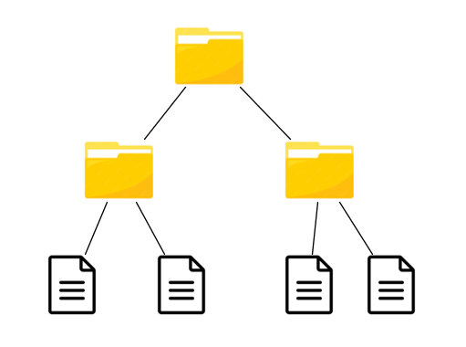Рис. 33 Файлова структура
Дерево Меркла матиме такий самий вигляд. Тобто для кожного файлу і папки порахують хеш, після чого побудують хеш-дерево в ієрархічному порядку. Потім у разі зміни файлової структури (якщо буде додано/видалено файл/папку або змінено наявні) хеш кореня дерева зміниться, також зміниться вся гілка, до якої належить цей файл.
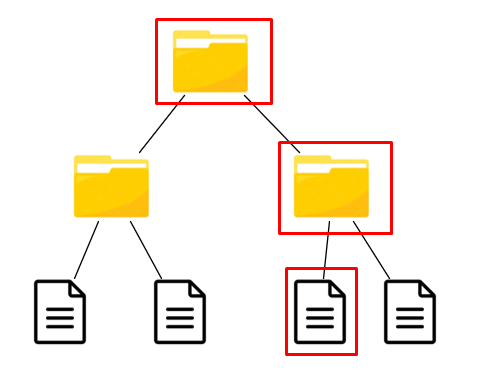Рис. 34 Змінені дані в файлі
У цьому випадку на рис. 34 було змінено третій за рахунком файл, а отже, змінився і його хеш. У такому разі змінився хеш вищого вузла і відповідно кореня дерева. Якщо користувач порівняє попереднє хеш-дерево і поточне, він побачить, що у файловій системі відбулися зміни. Далі він може спуститися від кореня на один рівень нижче, і знову порівняти хеші вузлів двох дерев. Так він побачить, що вузол лівої частини дерева не змінився, а отже, нові зміни файлової системи відбулися в правій частині дерева. Так він може проробляти доти, доки не знайде змінений файл. Такий спосіб досить ефективний для відстеження змін і контролю версій.
Тут були розглянуті основні області (крім блокчейна) де використовується така структура даних як дерево Меркла. Звісно, є ще кілька досить важливих сфер, де воно використовується, наприклад, IPFS, про який згадувалося вище, або BitTorrent, а також централізовані фінансові системи, такі як банкінг. Про це все ви можете додатково дізнатися в інтернеті.
Висновок: Дерева Меркла - Ключ до Ефективності та Надійності в різних галузях
Закінчуючи цю "невеличку" статтю про дерева Меркла, ми бачимо, що ця унікальна структура даних має величезний вплив у різних галузях інформатики. Почавши з теорії графів, ми занурилися у світ графових структур, їх типів, властивостей і застосувань.
Окрему увагу було приділено деревам, які виступають важливим підтипом графів і знаходять широке застосування в комп'ютерних науках. Розглянувши різноманітність дерев - від бінарних до збалансованих - ми глибше зрозуміли їхню структуру та характеристики.
Усе це було зроблено для того, щоб краще зрозуміти, що ж таке це дерево Меркла. Ефективна побудова, перевірка цілісності даних і безліч застосувань у блокчейні - все це робить дерева Меркла незамінними інструментами в сучасних обчислювальних системах.
Від блокчейна, де дерева Меркла слугують основою для забезпечення надійності та цілісності даних, до криптографії, де вони відіграють роль у схемах цифрових підписів, і систем контролю версій, де полегшують відстежування змін, - дерева Меркла знаходять своє застосування всюди.
Таким чином, вони стають невід'ємною частиною сучасного інформаційного світу, забезпечуючи ефективність, безпеку та стійкість у найрізноманітніших галузях.